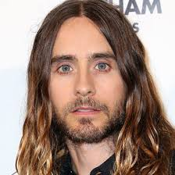

JARED LETO

Jared Leto is an American musician, actor, and director known for his versatility and dedication to his craft. He is the lead vocalist and songwriter for the band Thirty Seconds to Mars, which he formed with his brother Shannon Leto. The band has achieved international success with hits like "The Kill" and "Kings and Queens," blending alternative rock with conceptual themes and dynamic live performances.
In addition to his music career, Leto is a celebrated actor. He first gained recognition for his role as Jordan Catalano on the TV series "My So-Called Life" (1994–1995). His film career includes standout performances such as:
- Requiem for a Dream* (2000), where he portrayed a drug addict in a harrowing tale of addiction.
- Dallas Buyers Club* (2013), which earned him an Academy Award for Best Supporting Actor for his role as Rayon, a transgender woman battling AIDS.
- Suicide Squad* (2016), where he delivered a unique and controversial take on the Joker.
Known for his commitment to method acting, Leto often undergoes extreme physical transformations for roles. Beyond entertainment, he has shown interest in entrepreneurship, technology, and environmental causes. Despite occasional controversies, he remains a prominent figure in both the music and film industries.
Home